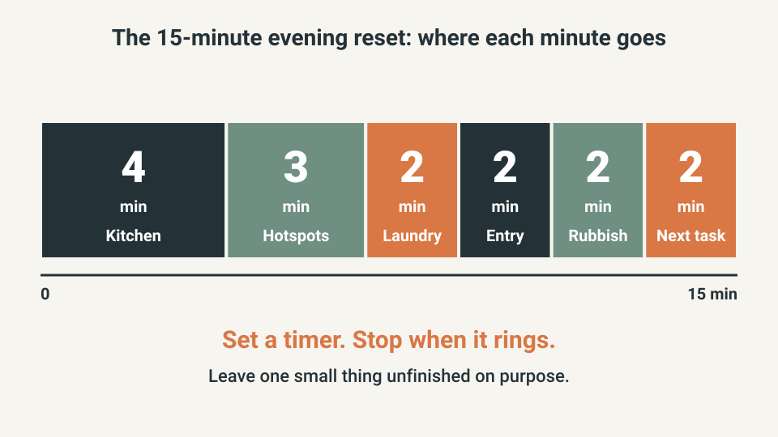
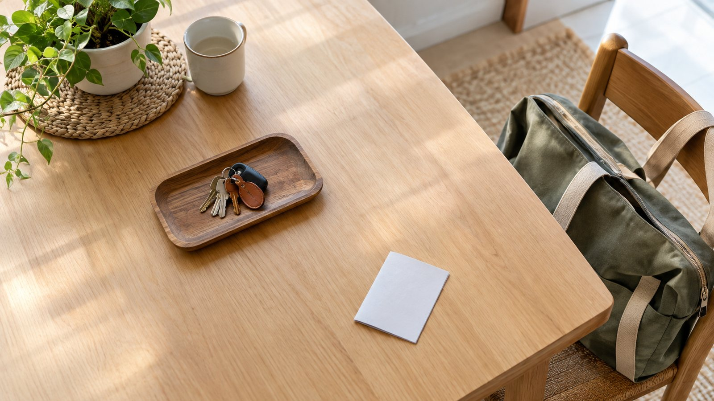
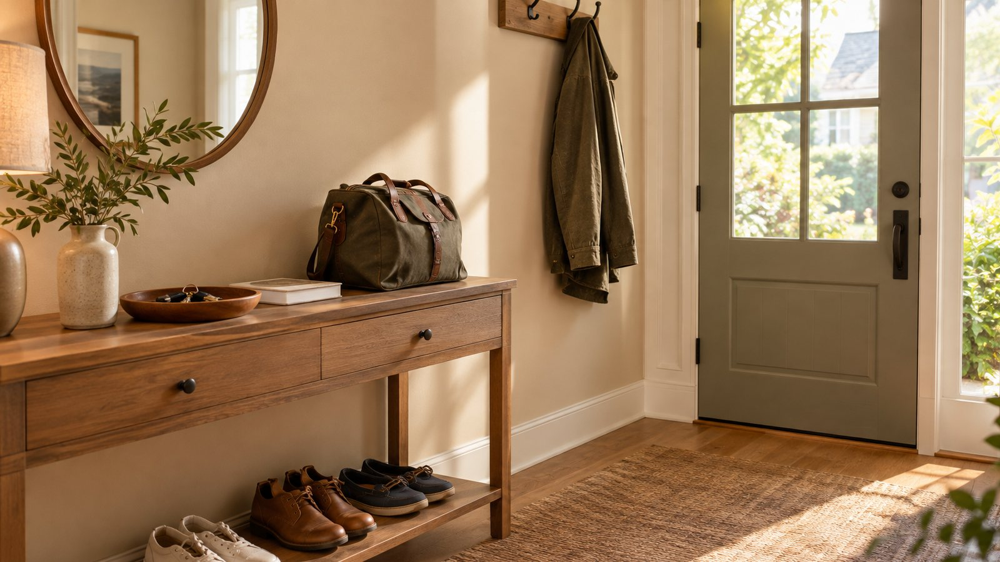

STORAGE & ORGANIZATION · ROUTINES
Simple Home Reset That Prevents Weekend Chaos
Weekend cleaning becomes exhausting when weekday tasks pile up. You do not need a perfect daily schedule, only a short reset that catches what makes tomorrow harder: dishes, visible clutter, laundry bottlenecks, rubbish and unfinished tasks. Keep it small enough to repeat.

Quick answer
The short version: spend 15 minutes each evening on the things that would make tomorrow harder, then stop.
- Kitchen sink and main counter (4 min): dishes, food away, one wipe.
- Two clutter hotspots (3 min): walk them with a basket, return items to their rooms.
- Laundry (2 min): move one load to its next stage.
- Entryway (2 min): coats, bags and keys where they belong.
- Rubbish and recycling (2 min): collect the obvious items.
- One unfinished task (2 min): write the next action on a note and put it where you will see it.

Set a timer and stop when it rings. A reset that you repeat on weekdays beats a perfect one that only happens on Saturday.
1. Reset for tomorrow, not for perfection
The useful question at the end of the day is not “Is the house clean?” but “What will make tomorrow unnecessarily difficult if I leave it?” A sink full of dishes, a blocked entryway, a laundry pile and a counter covered with packaging each create friction in the morning. Choose tomorrow's problems first: you are not finishing the house, you are removing obstacles from the next day.

2. Start with the kitchen sink
The kitchen sets the feel of the whole home because it is used repeatedly. Clear dishes, put food away and wipe the main preparation surface; skip deep-cleaning appliances and reorganizing cupboards. If dishes are the recurring bottleneck, change the routine instead of lengthening the session: load the dishwasher, wash the few remaining items or set a simple rule for when dishes are handled. End the day with a usable sink and preparation zone.
3. Clear the clutter hotspots
Every home has places where objects accumulate: the dining table, sofa arm, stairs, kitchen island or a particular chair. Pick the two or three hotspots that affect daily life most and walk through them with a basket. Put obvious items back in their rooms, recycle rubbish and leave only what belongs. The basket is a transport tool, not storage: empty it before the reset ends.
4. Handle laundry before it becomes a weekend mountain
Laundry does not need to happen every day, but it needs a predictable place in the week: where dirty clothes go, when a load starts, and where clean clothes wait before being put away. Separate only what genuinely needs separate treatment. Overcomplicated rules create unfinished loads, and one simple schedule that keeps clothing moving beats a detailed plan that is regularly abandoned.
Safety first. Empty the dryer lint filter before every load and do not overload the machine.
5. Reset the entryway before morning
The entryway can turn a calm morning into a search exercise. Put daily coats and bags on their hooks, return keys to the landing zone and reduce shoes to the pairs normally used; seasonal overflow should already live elsewhere. It takes little time and pays off because everyone passes through during departures. A small evening reset prevents mornings that start with “Where are my keys?” and “Whose shoes are these?” If the entrance keeps filling up despite the reset, the quiet entryway storage guide covers hooks, a small landing zone and a shallow shoe zone.

6. Finish the visible rubbish and recycling
During the reset, collect obvious rubbish from the main living and kitchen areas and move recycling to its normal place, without turning it into a whole-house inspection. If rubbish keeps accumulating in the same room, add a small temporary bin or move the main bin: good routines shorten the distance between the action and the place where the item belongs.
7. Choose one unfinished task for tomorrow
Some clutter is an unfinished project: a return package, a repair part, a school form or a tool. Instead of hiding it, define the next action in one line (“Return package at lunch tomorrow” or “Buy screw at hardware store”) and store the object where you will see it at the right time. This stops the home from becoming a reminder board for dozens of unresolved tasks.
8. Use a timer instead of a huge checklist
A timer keeps the routine from expanding. Set 15 minutes, move continuously through the priority areas and stop when it ends, unless there is a genuine safety or hygiene issue. A short reset that leaves one small thing unfinished is more sustainable than a perfect reset that takes an hour and therefore happens only on weekends.
- Start a 15-minute timer.
- Clear the kitchen sink and main counter.
- Reset the two biggest clutter hotspots.
- Move laundry to its next stage.
- Reset the entryway.
- Remove obvious rubbish.
- Write the next action for one unfinished task.
9. Do not clean rooms that are already functioning
If a bedroom is tidy enough to sleep in and the bathroom is functional, leave them alone. A daily reset prevents accumulation; it does not maintain showroom conditions. Keep deep cleaning on a separate schedule: the daily reset handles friction, and a weekly or monthly session handles tasks that need more time.
10. Make the reset shared when possible
A household reset works better when it is not silently assigned to one person. Give each person a small area or category: one handles dishes, another resets the entryway, and children return their own daily items to defined places. The point is not equal minutes every night but shared responsibility for keeping the home usable. If one person always knows where everything belongs, the system depends on that person instead of being a household habit.
11. Review the routine after one week
After seven days, ask what repeatedly escaped the reset. If the same pile returns, do not just add a step: the item may have no home, its home may be inconvenient, or the category may be too large. Remove steps that produce little benefit and keep those that consistently make the next morning easier. A useful routine gets shorter over time because you solve causes instead of treating symptoms.
12. Use a different standard on genuinely busy days
A routine that only works when everyone has energy is not useful, so decide in advance what the minimum looks like on a difficult weekday.
| Day type | What to do |
|---|---|
| Normal day | The full 15-minute reset (section 8) |
| Difficult day | Dishes, rubbish, the main food surface and the entryway, then stop. Laundry and deeper tidying can wait if they will not create a problem tomorrow |
The minimum version protects the habit: you are not failing because you skipped a low-priority task, you are preserving the parts of the home that affect tomorrow. It also reduces resentment, because everyone understands the goal is functional recovery, not perfection every night.
13. Keep deep cleaning separate from the daily reset
Bathrooms, floors, windows, appliances and other deep-cleaning tasks deserve their own schedule. Mixing them into the daily reset makes it unpredictable and easy to postpone. Use the daily reset for function (clear the sink, restore high-traffic surfaces, move laundry forward, reset the entryway, name one next action) and a weekly or monthly list for the rest.
Safety first. Keep chemicals in their original labeled containers, follow the label, and never mix bleach with ammonia, vinegar or other cleaners. Ventilate the room while you clean.
For a practical kitchen-focused reset, the USDA's household food-safety guidance is a useful reference for cleaning and safe food handling: USDA food-safety resources. Keep hygiene-critical work clear and specific rather than hiding it inside a vague instruction to “clean the house.”
After a week, measure the result with one question: did the reset make the next normal day easier? If yes, keep it. If a step produces little benefit, remove it.
Use the one-touch rule for obvious items
If an object has an obvious home and returning it takes a few seconds, do it once instead of putting it in a temporary pile: a mug goes to the kitchen, shoes go to their area, mail that clearly belongs in recycling does not become tomorrow's pile. The rule has a limit: do not force uncertain decisions into the 15-minute routine. If you do not know where something belongs, leave it in a small decision spot or note it for later. Small repeated corrections matter more than an occasional long organizing session, especially where clutter is many small objects rather than one large mess.
Common reset mistakes
- Letting a 15-minute reset grow into a deep clean of every room.
- Assigning the whole routine silently to one person.
- Adding more steps when the same pile returns, instead of asking why that item has no convenient home.
- Hiding an unfinished task in a pile instead of naming its next step.
- Cleaning rooms that already work.
- Using one high standard on every day, including the busiest ones.
What not to buy yet
- A new set of storage bins before you know which pile keeps coming back.
- A printed cleaning binder or a chore app. A timer and a short list are enough for the first two weeks.
- More baskets. One basket for carrying items back to their rooms is enough.
- A bigger bin. If rubbish builds up in one room, move the bin closer first.
Quick win (10 minutes)
- Tonight, set a timer for 10 minutes.
- Clear the sink and the main counter.
- Pick the one hotspot that annoyed you most today and clear it with a basket.
- Put the keys and bag where you will see them in the morning, then stop.
How to tell it is working
After one week, check three things: is the sink usable at breakfast on most days, can you find your keys without searching, and does the weekend clean feel shorter than before? If not, do not add steps. Find the pile that keeps coming back and give it a home closer to where it lands.
Frequently Asked Questions
How do I keep my house clean during the week?
Use a short daily reset that handles the few tasks that create the most visible or functional problems instead of trying to clean the whole home every day.
How long should a daily home reset take?
Aim for about 10 to 20 minutes, depending on the home. The routine should be short enough to repeat on ordinary busy days.
What should I clean every day?
Prioritize dishes, food surfaces, obvious rubbish, high-traffic clutter and anything that will make tomorrow harder if it remains unfinished.
How do I stop weekend cleaning from taking all day?
Prevent small tasks from accumulating by resetting key surfaces and returning daily items to their homes during the week.
Should I do laundry every day?
Not necessarily. Choose a frequency that prevents the laundry from becoming an urgent pile while fitting your household's actual clothing needs.
The goal is not a spotless house every night. The goal is to stop ordinary friction from becoming a weekend crisis. Keep the reset short, solve recurring causes and leave the home ready for the next normal day.